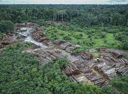
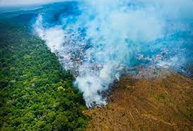
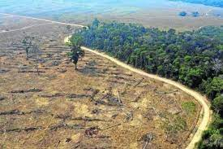
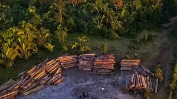

O desmatamento da Amazônia preocupa a todos, há uma preocupação mundial quando se fala
sobre o desmatamento da Amazônia, que é pulmão do mundo.
Desmatamento no Brasil
O Brasil é um dos países com maior cobertura vegetal do mundo, são aproximadamente 20 mil quilômetros quadrados de vegetação, mas é o maior em desmatamento, esse derrubada das vegetação, acarreta perdas consideráveis na biodiversidade, consequentemente acarreta o empobrecimento dos solos, erosões e emissões de gás carbônico na atmosfera.
O desmatamento ocorre principalmente pela construção de estradas, hidrelétricas, retiradas de madeiras ilegal, que representa aproximadamente 80% das derrubam de árvores e mineração na sua maioria ilegal.
Segundo o Instituto Nacional de Pesquisa Espacial, a área desmatada na Amazônia até o ano de 2002 era superior ao tamanho do território francês.
É importante destacar que a Mata Atlântica também perdeu uma grande área, que pode chegar em aproximadamente 93% de sua área total, isso significa que a Mara Atlântica é considerada uma das mais ameaçada do planeta, o cerrado e a caatinga também está sofrendo com desmatamento, o responsável por essa redução, está ligada à intensa urbanização e as atividades agropecuárias, no cerrado segundo estudos do Ministério do Meio Ambiente, 67% do bioma sofreu modificação. A Caatinga teve sua vegetação reduzida pela metade devido ao desmatamento, só aproximadamente 500 mil hectares devastados por ano.
O desmatamento está ligado ao desenvolvimento econômico imediatista, desprezando o desenvolvimento social e ecológico, isso poderá acarretar problemas irreversíveis num futuro muito próximo.
Desmatamento é um problema de todos
Principais Causas: Ao longo de décadas a Amazônia vem sendo devastadas por poceiros, construção de
rodovias, projeto de colonização e a expansão da mineração.
Desmatamento da floresta

O desmatamento é um processo de degradação da vegetação nativa de uma região e pode provocar um processo de desertificação. Além disso, é considerado como desmatamento a retirada completa da vegetação a partir do chamado “corte raso”
Incêndio florestal

O que é? É a propagação do fogo, em áreas florestais e de savana (cerrados e caatingas), normalmente ocorre com freqüência e intensidade nos períodos de estiagem e está intrinsecamente relacionada com a redução da umidade ambiental.
Floresta devastada

A floresta do Brasil que mais sofreu com a devastação foi a Mata Atlântica. Como ela se encontra no litoral do país, acabou se tornando o primeiro local para a ocupação da sociedade. Com isso, estima-se que restam apenas 7% da vegetação original da Mata Atlântica.
Venda de madeira ilegal

Grande parte das madeiras que são proibidas de corte, como o mogno, a castanheira e o cajueiro, por exemplo, são transportadas para São Paulo que consome 15% do material processado e comercializadas ilegalmente para a construção civil.
CONSEQUÊNCIAS DO DESMATAMENTO
Consequências:
Pode causar desequilíbrio ecológico
Alterações climáticas e compromete toda a biodiversidade
O desmatamento da Amazônia contribui para o aumento do aquecimento global.
O empobrecimento do solo e processos erosivos, e assoreamentos dos rios.
Onde podemos obter as informações do desmatamento?